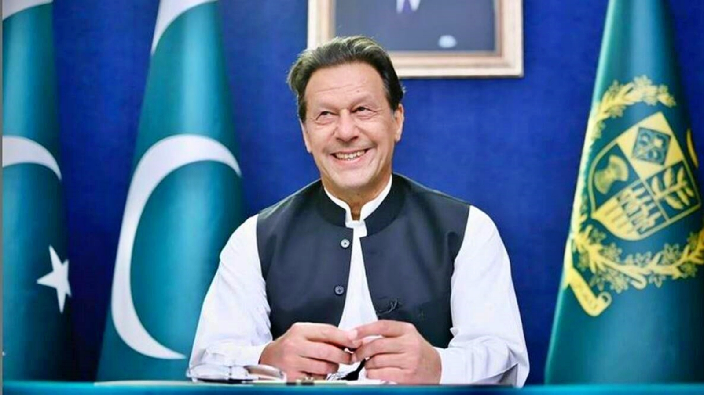
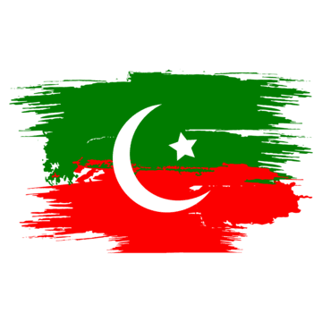

Tribute Page

About the Imran Khan
Imran Khan, born on October 5, 1952, in Lahore, Pakistan, has had a multifaceted career spanning cricket, philanthropy, and politics. Here's a comprehensive overview of his life and career:

Early Life and Education:
Imran Khan was born into a well-to-do Pashtun family. He attended Aitchison College in Lahoreand then went to the Royal Grammar School Worcester in England. Later, he attended Keble College,
Oxford, where he studied Philosophy, Politics, and Economics. It was during his time in England that
he developed a passion for cricket.
Cricket Career:
Imran Khan made his cricket debut for Pakistan in 1971. He quickly established himself as one of the world'spremier fast bowlers. Khan captained the Pakistan cricket team from 1982 to 1992. The pinnacle of his cricket
career came in 1992 when he led Pakistan to victory in the Cricket World Cup. He retired from cricket after the
World Cup, having played 88 Test matches and 175 One Day Internationals.
Philanthropy:
Following his cricket career, Khan became involved in philanthropy and social work. In 1991, he founded theShaukat Khanum Memorial Cancer Hospital & Research Centre in Lahore, named after his mother who died of
cancer. He also established Namal University in Mianwali, aimed at providing quality education to
underprivileged youth.
Entry into Politics:
Imran Khan entered politics in the mid-1990s, forming the political party Pakistan Tehreek-e-Insaf (PTI) in 1996.Initially, PTI struggled to gain significant electoral success but gradually became a prominent force in Pakistani
politics, especially among the youth.
Political Career:
Khan's political ideology focused on anti-corruption, justice reform, and social welfare. He campaigned againsttraditional political dynasties and advocated for a clean and transparent government. Despite facing setbacks
in several elections, Khan persisted in his political ambitions.
Prime Ministership:
Imran Khan's PTI won the general elections in 2018, securing the most seats in the National Assembly. On August18, 2018, Imran Khan was sworn in as the 22nd Prime Minister of Pakistan. His tenure as Prime Minister focused on
addressing corruption, improving governance, and implementing socio-economic reforms. However, his
government faced challenges, including economic difficulties, opposition criticism, and foreign policy complexities.
Khan's leadership style, charisma, and determination to bring change to Pakistan's political landscape marked his tenure.
Legacy and Controversies:
Imran Khan's legacy is a subject of debate, with supporters praising his efforts to tackle corruption and initiatedevelopment projects, while critics highlight his handling of various issues and allege authoritarian tendencies.
His tenure as Prime Minister ended in April 2022, and he continued to be a prominent figure in Pakistani politics
thereafter. Throughout his life, Imran Khan has been a polarizing figure, admired by many for his achievements in
cricket and philanthropy, while also facing criticism and scrutiny for his political decisions and governance style.